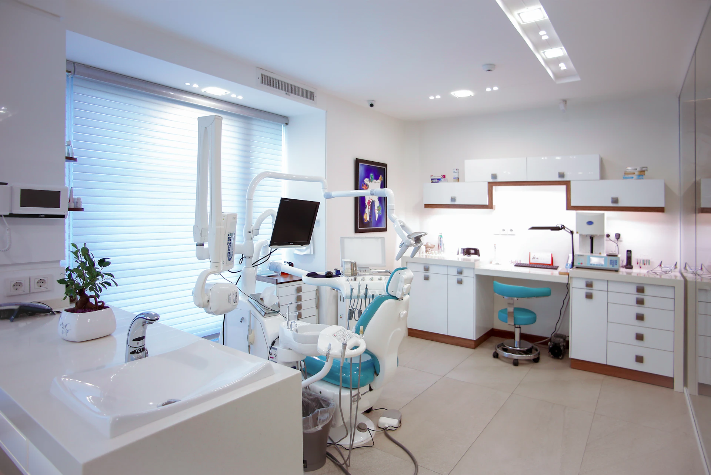

Atendimento personalizado
Um cuidado que considera suas necessidades, rotina e expectativas.

Odontologia contemporânea
Odontologia moderna, planejamento preciso e atendimento próximo em cada etapa.
Precisão em cada detalhe
Tecnologia • escuta • cuidado
01 / A clínica
Cada consulta começa por escuta. Unimos um ambiente calmo, profissionais atentos e recursos digitais para que você entenda cada escolha do seu cuidado.
Nosso jeito de cuidar02 / Seu cuidado
Conheça os tratamentos disponíveis e encontre as informações para iniciar seu atendimento.
03 / Nosso jeito de cuidar
Um cuidado que considera suas necessidades, rotina e expectativas.
Decisões informadas, etapas claras e previsibilidade para você.
Recursos digitais a serviço do cuidado e da comunicação.
Um ritmo mais tranquilo em um ambiente que acolhe desde a chegada.
Presença antes, durante e depois para acompanhar cada etapa.
04 / Sua jornada
Conhecemos você e investigamos suas necessidades.
Desenhamos o caminho mais adequado, com transparência.
Conduzimos cada etapa com técnica e atenção.
Seguimos próximos para acompanhar a evolução do cuidado.
05 / Cuidado e tecnologia
O planejamento visual ajuda a explicar possibilidades e etapas do cuidado. Cada indicação é feita após uma avaliação individual.
Falar com a equipe06 / Experiências
Depoimentos fictícios, apenas como exemplo
“A consulta foi muito mais tranquila do que eu imaginava. Entendi cada passo antes de decidir.”
“O cuidado com os detalhes e a organização fazem toda diferença. Me senti seguro do início ao fim.”
“Levei minha filha e fomos acolhidas de um jeito muito especial. Ela saiu sorrindo.”
07 / Dúvidas comuns
É uma conversa cuidadosa para entender suas necessidades, realizar a avaliação clínica e explicar os próximos passos possíveis.
Consulte os tratamentos disponíveis no catálogo da clínica. A indicação de cada procedimento depende de avaliação individual.
As informações de atendimento e contato ficam no catálogo da clínica, quando disponibilizadas pela equipe.
Consulte as informações do catálogo. O plano de cuidado e os valores de cada tratamento dependem de avaliação e confirmação com a equipe.
Acesse o catálogo e envie sua solicitação pelo canal de atendimento disponível. A data e o horário dependem da confirmação da equipe.
AURA / Odontologia
Conheça as opções de cuidado e solicite uma primeira conversa com a equipe.
Os tratamentos e os canais de atendimento desta clínica serão disponibilizados aqui em breve.